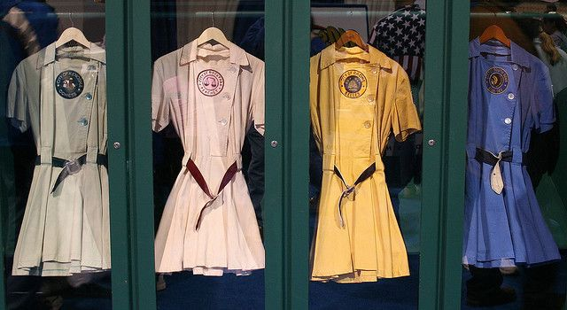

All American Professional Baseball League
League information
The All American professional Baseball League was the first professional
baseball league for women, which was founded by Philip K. Wrigley. The league
existed from 1943 - 1954. Most of the leagues history Bill Allington was the
manager of different teams within the league. Teams generally played in the
Midwest.The ball that they used was the size of a regulation softball. The
teams had 9 players on the field. Their salaries were $45-$85 a week during
the first year that the played and about $125 a week in the years after.
$45-$85 would be $624-$1179 in 2016 dollars, and $125 would be $1156 in 2016
dollars. The only teams that stayed in their home cities for the full time
the league existed were the Rockford Peaches, and the South Bend Blue Sox.
The Rockford Peaches
were one of the two teams that played in every season of the AAGPBL.
The team represented Rockford, Illinois, where their home games were at Beyer
stadium. The Peaches won the championship in 1945, 1948, 1949, and 1950.
They are a part of the 1992 film,
A League of their Own
the characters are fictitious though.
The South Bend
Blue Sox was the other team that played every season in the league. They
represented South Bend, Indiana, and their home games were at Bendix Field
from 1943 - 1945 and then Playland Park
Playland Park from 1946-1954. They appeared at six playoff series and
won two league titles.
